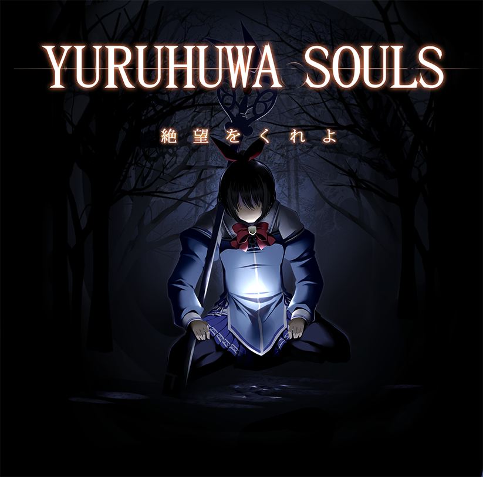
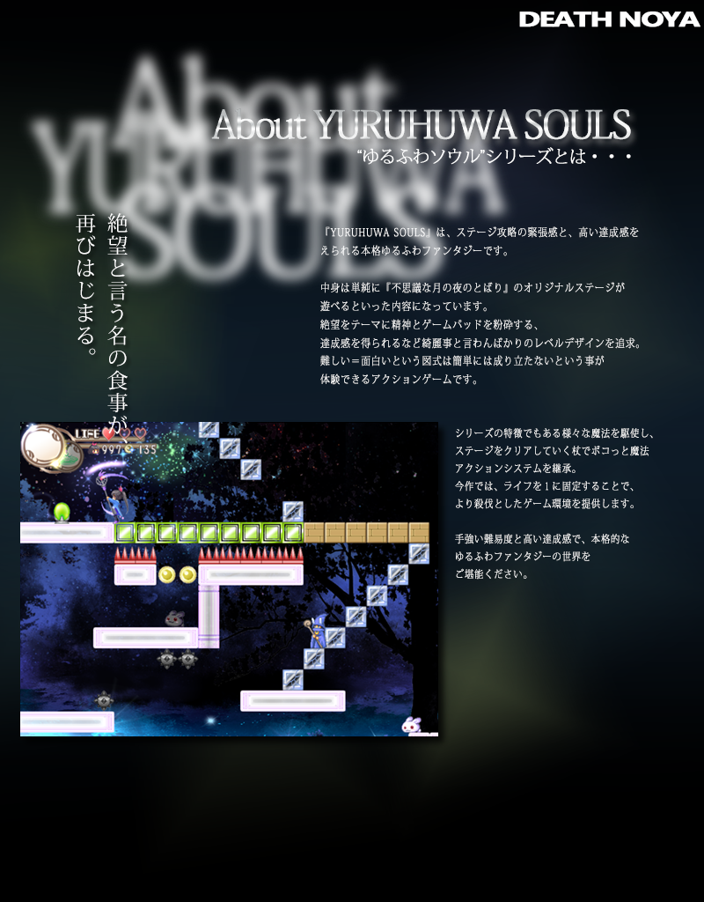
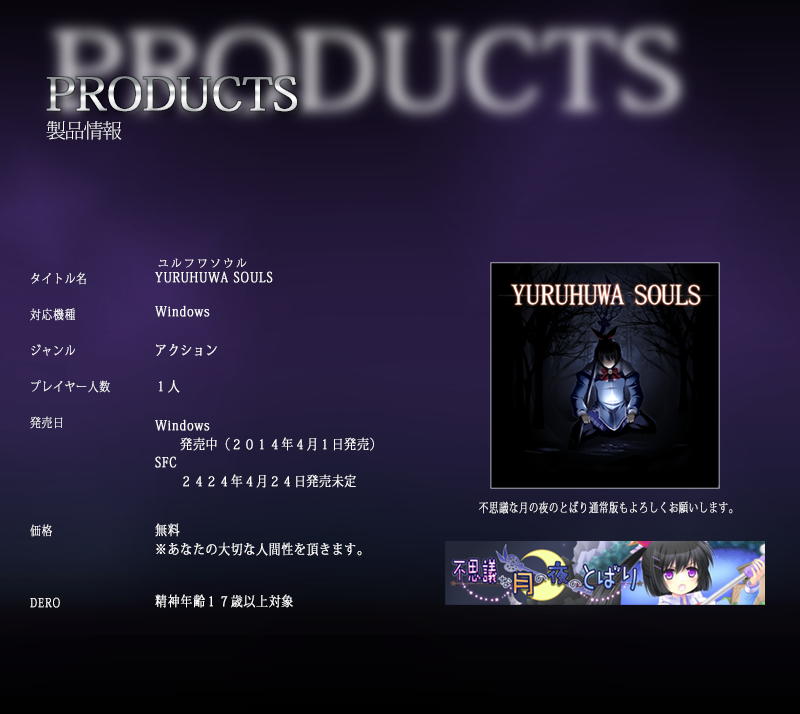
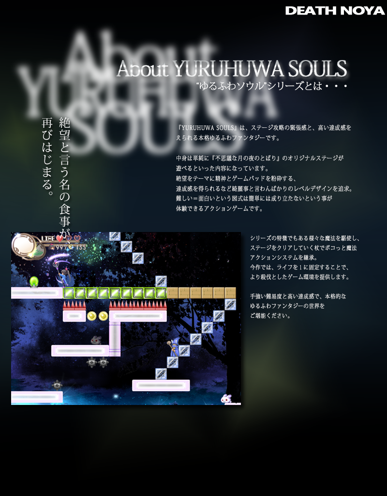
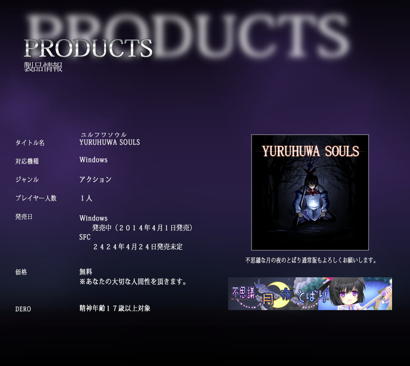

自己紹介
名前：ですＮＯ（ですの）
役職：いろいろ。企画、プログラム、絵はぼちぼち。
挨拶：
すっかりのんびり長老なですＮＯです。
日々ゲーム作ってます。
相方の絵描きは高菜さん。
ともどもよろしくお願いします。
最近東京ゲームショウとかでもインディーズゲームだ〜とか
小規模制作のゲームが話題になってきた昨今！
Unityやアンリアルエンジン等の
ゲームエンジンとかも豊富になってきて、
色々出来る感じになってきた！
そういうのを使うのもいいかと思います。
ゲームを作るのは楽しい！作ったゲームを遊んでもらうのも楽しい！
ぱんどどで良き仲間をみつけてゲームを作って行きましょう♪
俺と一緒にゲームを作ってくれる人もいつでも募集中ッ！
格ゲーとかもやりましょう。
Twitter：https://twitter.com/desuno
webさいと。作ったゲームとかはここで！